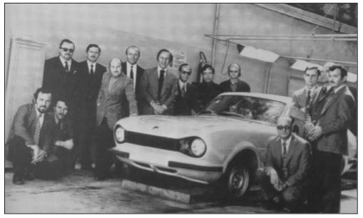
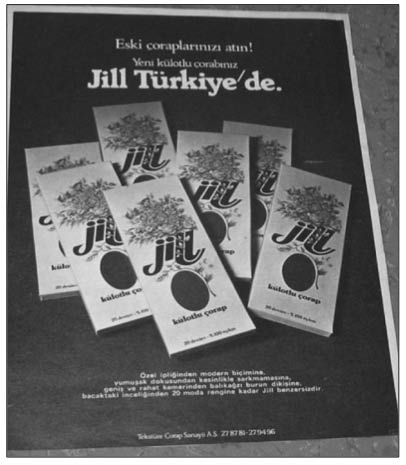

A
Adil Düzen (Necmettin Erbakan’ın idealindeki meşhur ekonomik sistem): Siyaset dünyamızın içindeki partilerin savundukları bir ekonomi politikasının olması zorunlu bir durumdur. Ancak savunulan fikirlerin ülkenin içinde bulunduğu bütün sorunlara çözüm bulması beklenir. Peki, “Adil Düzen” böyle bir şey miydi? Savunduğu “Adil Düzen” fikriyle Millî Görüş çizgisinin lideri Erbakan, tartışılmaz bir şekilde Türk siyasetine damgasını vuran kişilerden biri oldu. “Adil Ekonomik Görüş” onun üzerinde en çok durduğu konulardan biriydi. “Adil Düzen”, Anayasa Mahkemesi tarafından kapatılarak tarih sayfasına gömülen Refah Partisi (RP)’nin savunduğu ekonomik ve politik yaklaşımı ifade eden sistemin genel adıydı. RP, bu görüşünü ilk kez 1991 Genel Seçimleri’nde gündeme getirdi. “Adil Düzen” düşüncesinde, bütün ekonomik faaliyetlerin özel kesim tarafından yürütülmesi esas alınıyordu. Devletin ekonomik faaliyetlerde bulunmadığı sistemde, devletin görevlerinden biri tekelleşmeyi önlemekti. Gerçek anlamda tekelden arındırılmış, özel teşebbüse dayalı bir düzen esas alınıyordu. RP lideri Erbakan’ın internet sitesinde konuya ilişkin detaylar şu şekilde sıralanıyordu:
“Adil Düzen”de istikrar var; vergi bellidir. Kur bellidir. Para ancak mal karşılığı piyasaya çıkar, faiz yoktur. Bu istikrarlı zeminde özel ve tüzel kişiler kaynakların en iyi şekilde kullanılmasında serbestçe aktif rol oynarlar.” (home.arcor.de/necmeddin_erbakan)
“Adil Düzen”in ülkedeki bütün sorunların çözümü olarak sunulması yeteri kadar inandırıcı değildi. Ülke ekonomisinin geldiği nokta itibariyle, siyasi ve ekonomik çevreler bu düşünceyi yaşanan sorunlara çözüm getirebilecek olgunlukta görmüyorlardı. “Adil Düzen” konusunda en önemli gelişme 1994’te yaşandı. Partisinin grup toplantısında konuşan Erbakan, Türkiye’de mutlaka “Adil Dü-zen”e geçileceğini savunarak unutulamayacak bir tehdit savurdu: “Şimdi soru şu? Bu geçiş kanlı mı olacak, kansız mı, acı mı olacak, tatlı mı, sert mi olacak, yumuşak mı?” Erbakan’ın bu sözleri, RP’nin siyasi yaşamını sona erdiren kilometre taşlarından biri oldu.
“Affairiste” Salgını (Cumhuriyet’in ilk yıllarına hâkim olmuş bir tür çıkarcılık hastalığı): Kitabın okuyucusu haklı olarak bu “affairiste” konusunun nereden çıktığını merak eder. Doğrudur. Bugün çok şey ifade etmiyor, ama Cumhuriyet’in ilk yıllarında, yetki ve nüfuzunu kısa yoldan para kazanmak için kullanan yönetime yakın kişilere “aferist”, onların yakalandığı akıma da “aferizm” denirdi. İş Bankası, bu salgın olayının merkezinde duruyordu. “Affairiste” kelimesi, İş Bankası’nın Fransızca karşılığı olan “Banque d’Affaires”den esinlenerek dile yerleşmişti ve aynı zamanda da “çıkarcı” anlamına geliyordu.
Celal Bayar liderliğindeki “İş Bankası Grubu”; Muammer Eriş, Siirtli Mahmut, Kılıç Ali, Recep Zühtü, Salih Bo-zok, Nuri Conker, Cevat Abbas vb. gibi nüfuzlu kişilerden oluşuyordu ve “affairiste” tartışmalarında bu grupta yer alan kişilerin isimleri sık sık işitiliyordu. Kurtuluş Sava-şı’ndan gelme nüfuzlu politikacılarla sivrilmiş eşraf ve tüccarı bir araya getiren İş Bankası, devlet gücüyle kısa zamanda gelişmiş ve bu sayede birçok kapitalist imal etme sürecinde aktif bir rol oynamıştı. Kuruluşunu izleyen yıllarda banka, yerli ve yabancı sermayeyle siyasi iktidar arasındaki bütünleşme sürecinde hayli etkili olmuştu. Bu dönem, siyasal yetki ve nüfuzun özel çıkarlar için kullanılması aracılığıyla “zengin yetiştirme” sürecinde özel bir yer edinmişti. Bu nedenle banka ve onun yöneticileri, iktisat politikasını özel girişimden yana etkilemeye çalışan güçlü bir baskı grubu oluşturmuşlardı. Banka içinde, kendilerini iş hayatının göbeğinde bulan Kurtuluş Savaşı temsilcileri de iş hayatının tadına kolayca varmışlardı. Bankayla ilişkili politikacılar, sermaye çevreleriyle devlet arasında önemli bir halka görüntüsü taşıyorlardı.
“Affairiste” akımının etkisi altına girenler en kısa zamanda İş Bankası çevresinde de kendilerine yer ve sığınak bulmuşlardı. Dönemin önemli tanıklarından Şevket Süreyya Aydemir, ihtiyatlı üslubuyla İş Bankası’nın bu durumuyla ilgili olarak şu yorumu yapmıştır:
“İş Bankası’nın kuruluşu sırasında, Gazi’nin de takdir ve teşviklerinde yer alan iyi niyetlerin yanında, bir taraftan da memlekette, devlete arkasını vererek, devlet nüfuz ve imkânlarından faydalanan bir takım affairiste temayüllerin, yani işadamlığı, çeşitli yollardan iş takipçiliği, zayıf ruhlu insanların menfaatlerine göre işletilen tesis cereyanlarının da belirdiği bir gerçektir. Hemen hiçbiri iş âleminden gelmeyen, hemen hepsi de eski mücadele günlerinin asker, idareci, yahut siyasetçi elemanları arasında türeyen bazı insanların yeni devrin iktisadi işlerini ve imkânlarını, az çok maskeli şekillerde, fakat daima devletin nüfuzuna dayanarak, kendi menfaatlerine kullanmak çabaları olmuştur.” (Aydemir, Cilt 1, 1999, s.454)
Falih Rıfkı’nın bu konudaki yorumu, çok daha sertti. Çankaya kitabında, İş Bankası’nın bir anlamda politikacılar bankası olarak kurulmuş olmasını, Cumhuriyet tarihi için pek acıklı bir “Affairistte salgınının” başlangıcı olarak görür.
Bankanın faaliyetlerine, bu faaliyetler çevresinde oluşan “affairistte” eğilimlere karışmamakla birlikte Atatürk’ün, İş Bankası grubuyla hükümet arasında 1932’de çıkan bir ihtilafta bankacıları tutması, ileride iktisat politikasının gelişim doğrultusu üzerinde önemli bir etki yaptı.
Yeni nesil sanayiciler, İş Bankası çevresinde toplanmıştı ve “bireyin zenginleşmesiyle devletin de zenginleşeceğini” düşünen Mustafa Kemal Atatürk’ten de destek görüyorlardı. Devletin kuvvetlenmesini isteyen grubun başında ise Başbakan İsmet İnönü vardı. İnönü’nün, İş Bankası grubu hakkındaki düşünceleri ise hiç de olumlu değildi.
Ağalar Şehri (İçinden sanayi patronları çıkaran kent): Bugün gelinen aşamada her ne kadar toplumun belli kesimleri tarafından “ağalık” fikrine sıcak bakılmasa da Adana, 1940’lı yıllardan itibaren yakaladığı girişimci geleneği nedeniyle “Ağalar Şehri” olarak anılır. Kendi içinden Sabancılar, Topraklar, Haslar ve Sabuncular gibi Türkiye ekonomisinin temellerini atan grupları çıkarmıştır. İşin komik tarafı, Adana’daki ağaların bir kısmı aslen Kayserilidir. Hacı Ömer Sabancı gibi bir kısmı Kayseri’den Adana’ya gelerek, Türk iş dünyasındaki “Adana’daki Kayserililer” ekolünü yaratan kişiler vardır. Hacı Ömer Sa-bancı’nın, Kayseri’den yaya olarak Adana’ya yürümesi, unutulmaz Türk ekonomi hikâyelerindendir. Adana’daki Kayserililerin yaptığı önemli işlerden biri de Akbank’ı kurmaktı. 1948’de Hacı Ömer Sabancı, Ahmet Sapmaz ve Bekir Sapmaz ile Millî Mensucat Fabrikası’nın ortakları Nuh Naci Yazgan, Nuri Has, Mustafa Özgür ile Seyit Tekin bankanın yüzde 15’erlik payına sahip ortaklarıydı. “Ak” adını “Adana’daki Kayserililer” sözcüklerinin ilk harflerinden oluşturuyorlardı. Ayrıca ortakların birikimlerinin kaynağı olan pamuğu temsil eden sözcük de “ak”tı.
Ağır Sanayi Hamleleri (Zamanında sadece fabrika temelleri atılarak gerçekleştirilmeye çalışılan bir tür kalkınma zihniyeti modeli): 1980 öncesi ağır sanayi hamlelerini o kadar çok duymuştuk ki adına ağır sanayi denilen bu hamlelerle ciddi ciddi bir şey yapıldığını sanıyorduk. Evet, hamle yapılarak fabrikaların temelleri atılıyor fakat, tesisler bitirilemediği içindir ki ekonomiye bir türlü kazandırılamıyordu. Millî Selamet Partisi, 1974’te CHP ile ve 1975-1977’de de AP, MHP ve CGP ile koalisyon kurarak hükümet ortağı olduğu dönemlerde, önce “Güçlü Ekonomiye Geçiş”, sonra da “Ağır Sanayi Hamlesi” programlarının başlatılmasına ön ayak olmuştu. Erbakan, sanayi ve teknoloji bakanlıklarını alarak büyük projelerle kamuoyunun karşısına çıkıyordu. Anadolu’yu baştan başa geziyor, aklının estiği yere dualarla, kurbanlarla fabrika temelleri atıyordu. Döneme ilişkin yapılan yorumlara göre, projeler iyi hazırlanmamıştı ve temeli atılan büyük projelerin devamı getirilemiyordu. Çünkü temellerini attığı fabrikalar için ne yatırım kararı, ne plan, ne finansman vardı. Bu temellerin ne kadar uydurma olduğunu kanıtlamak için o yıllarda CHP Erzincan Senatörü olan Niyazi Ünsal bu temellerden birini otomobilinin bagajına atıp, Ankara’ya getirerek basına göstermişti.
Alamancılar (Almanya’ya çalışmaya gidenlere verilen genel ad): Türk işçilerinin, Almanya’ya ilk kez 1960’lardan itibaren gittiği bilinir. Oysaki bu yanlış bir bilgidir. Çünkü, Türklerin Almanya macerası aslında 1960’lı yıllarda değil, 20. yüzyılın hemen başında başlamıştır. Sanayileşmek isteyen Osmanlı, İngiltere ve Fransa’nın “çıkarcı” politikalarına karşı Almanya’yı kendine müttefik olarak seçmişti. İmzalanan Türk-Alman silah ve mühimmat anlaşmasına göre de bir milyon mavzer 25 yıl içinde Osmanlılara teslim edilecekti. 1879’da 279 kişiden oluşan Osmanlı silah kontrol ve kabul komisyonu heyeti, Mahmut Şevket Paşa’nın başkanlığında Obernburg kasabasındaki Mauser (mavzer) silah fabrikasına gitti. Bu nedenle, Türk insanının ilk tanıştığı silah mavzer oldu. Osmanlı, ihtiyacı olan “sanayileşme” olgusunu Almanlardan öğrenecekti. 1903’te Türk-Alman hükümetleri arasında bir öğrenci anlaşması imzalandı. Bu öğrenciler, Balkanlar’daki savaşlarda ailesini kaybetmiş öksüz çocuklardan oluşuyordu. Osmanlı öğrencileri, meslek ve çıraklık eğitimi için trenle Münih’e götürüldü. AEG ve Mercedes’te eğitime başlayan Osmanlı öğrencilerinin önemli bir bölümü savaş yıllarında geri dönmeyip buraya yerleştiler. Türklerin ilk tanıştığı otomobil Mercedes’ti. Belki de Türklerin, Mercedes’e düşkünlüğünün altında bu neden vardır.
Alo 900’lü Hatlar (1990’lara damgasını vuran telefon hatları): Türkiye’nin her dönemine damgasını vuran araçlar vardır. Bugün nasıl ki cep telefonu ayrılmaz parçamız ise 900’lü hatlar da bu döneme damgasını vurmuştu. Hatlar, 1992’den itibaren kamuoyunda büyük ilgi görmeye başladı. Çocuklar için “Alo masal”, ganyancılar için “Al eline kuponu ara Nalkapon’u”, yaşlılar için “Alo yalnızlık”, evde kalmış kızlar için “Alo Tarkan” derken, toplumdaki her farklı kesim için bir hat oluşturulmuştu. Küçük Emrah,900’lü hatların en çok aranan kişisiydi. 20 ayda, 1 milyon 110 bin kişi tarafından aranmış ve hayranlarıyla iki milyon dakika konuşmuştu. Bu sayede 4,5 milyar lira ciro yapan Alo Bilgin, Emrah’ı bir altın telefonla ödüllendirmişti. Bakkalın kızı Hülya Işıl, 900’lü hatların favori isimleri arasındaydı. Sloganı “İster eğlen, ister evlen”di. Hülya Avşar, TV’de en şirin hâliyle görünüp izleyicilerin karşısına, “Ararsınız değil mi? Ararsınız, ararsınız” sözleriyle çıkarken, Sibel Gökçe 900’lü hatlarda en çapkın erkeği seçiyordu. En revaçta olanları özellikle seks içerikli hatlardı.
Ardı ardına gelen yasaklamalar Alo şirketlerinin başını ağrıtsa da günde binlerce kişinin aradığı hatlardan hem şirketler hem de sanatçılar milyarlarca lira kazanırken, bu hatları arayan kişiler ciddi telefon faturaları ödemek zorunda kaldılar.
6-7 Eylül Olayları (Gayrimüslimleri ticaret dışına itmek için gerçekleştirilen olaylar dizisi): Türkiye’nin siyasal ve ekonomik hayatında derin izler bırakan siyasal gelişmelerin başında gelen 6-7 Eylül Olayları Türkiye’yi derinden etkiledi. Hani “görünüş aldatıcıdır” derler ya, 6-7 Eylül Olayları’nı da bu şekilde değerlendirmek gerekir. Olayların arka planında, ekonominin Türkleştiril-mesi amacı vardı. Şimdi gelelim resmî tarihte neler yazıldığına. 1955’te Kıbrıs sorunuyla ilgili olarak Yunanistan’ın tutumuna karşı, Türkiye’nin tepkisini göstermek gerekçesiyle İstanbul ve İzmir’de başlayan gösteriler, 6-7 Eylül gecesi Rum azınlığın mal ve mülklerinin tahrip edilip yağmalanmasına dönüştü.
Olaylar, Atatürk’ün Selanik’te bulunan evinin bombalandığı haberinin duyulmasıyla başladı. Dönemin akşam gazetelerinden biri olan DP yanlısı İstanbul Ekspres, 290 bin adetlik ikinci baskısını yaptı. Akşam saatlerinde daha önce örgütlenen ve bayraklarla Taksim’e yürüyen gruplar, “Ya Taksim Ya Ölüm” ve “Kıbrıs Türk’tür” sloganları atmaya başladılar. Gruplar ilk önce, Tünel’de bulunan Rum gazetelerine saldırdı, ardından da yakıp yıkma olaylarına girişti. Olaylar kısa sürede İstanbul’un birçok yerine sıçrarken, yakıp yıkma olayları daha sonra yağma ve talana dönüştü. Dükkânlara zorla girilerek içerdeki eşyalar ve mallar sokaklara atılıyordu. İstiklal Caddesi yerlere atılan kumaş ve çeşitli eşyalar nedeniyle yürünemeyecek duruma gelmişti. Gece yarısına doğru askerî birlikler olaylara müdahale etmek için geldiğinde, başta Beyoğlu olmak üzere İstanbul’un birçok yerinde azınlıklara ait talan edilmedik dükkân kalmamıştı. Saldırganlar, “On binlerce lira kazanıyorlar, iki paralık malı dünya kadar pahalıya satıyorlar” derken Kıbrıs’ı ve Rumları unutarak daha çok servet düşmanlığı yapıyorlardı. Güvenlik kuvvetlerinin yetersiz kalışı, olayların büyümesine neden oldu. Üniversite gençliği, daha çok tahribe yönelirken, şehrin varoşlarından gelenler-se talana girişmişti. Ortalık sakinleştiğindeyse, geriye kalan maddi ve manevi hasarın bilançosu oldukça ciddi boyutlardaydı. Şehrin dört bir yanında kiliseler, evler, işyerleri yağmalanmış, tahrip edilmiş ya da ateşe verilmişti. Olayların ardından üç büyük ilde sıkıyönetim ilan eden hükümet, olayların çıkış nedeni olarak da “solcuların tahrikini” gösterdi. Hiçbir şeyden haberi olmayan Aziz Nesin, Kemal Tahir, Asım Bezirci gibi sol düşüncedeki insanlar tutuklanarak bir süre cezaevinde kaldı. Olaylar, İstanbul’un çok kültürlü yapısını sona erdirdi. Olayların ardından başta Rumlar olmak üzere gayrimüslim nüfusun büyük bir kısmı Türkiye’den göç etti. İttihat ve Terakki’den sonra uygulanmaya başlanan ticaretten gayrimüslimleri tasfiye hareketi bir kez daha amacına ulaşmıştı. “Son göçmenler” ise, İnönü’nün 1960 sonrası başbakanlığı sırasında yürürlüğe giren bir kararnameyle yurtdışına çıkarıldı. Azınlıkları tasfiye hareketinin ilk perdesi Varlık Vergisi olmuştu, ikinci per-deyse 6-7 Eylül Olayları’yla sahnelenmişti.
Alyans Evleri (27 Mayıs Darbesi sonrası halktan toplanan alyanslarla yaptırıldığı iddia edilen meşhur evler): Ankara’da sonu “evler” ekiyle biten birçok semt vardır. Bunların arasında biri var ki, diğerlerinden oldukça farklıdır. Alyans Evleri, Türkiye’nin farklı bir tarihine de tanıklık eder. 27 Mayıs 1960 Askerî Darbesi yapılmış ve Millî Birlik Komitesi işbaşına geçmişti. Darbe öncesi bozulan ekonomik durumu düzeltmek amacıyla arayışların sürdüğü günlerde yine askerler tarafından Hazine’ye yardım amacıyla “Alyans Kampanyası” başlatıldı. I. Zırhlı Tugay’ın subay, astsubay, er ve bunların ailelerinin alyanslarını Hazine’ye bağışlamasıyla kampanyaya “start” verilmiş oldu. Askerlerin başlattığı bu kampanya kısa sürede ülke geneline yayıldı. Halkın bağışlarını kabul etmek üzere önce İstanbul’da, daha sonra da diğer illerde heyetler kurularak faaliyete geçildi. Kampanyaya yurtdışından da katılımlar olurken işadamı Vehbi Koç, kampanyaya 26 kilo altın ve bir bina bağışladı. Başta ordu mensupları olmak üzere, işçi, öğretmen ve öğrencilerin katıldığı kampanya sonucunda Hazine’de yüklü miktarda altın ve mücevher birikti. İlk başlarda halk tarafından geniş ölçüde sahiplenilen kampanya, daha sonraları Ankara Yücetepe’deki askerî lojmanların halktan alınan bu paralarla yapıldığına ilişkin söylentilerin çıkmasıyla hayal kırıklığı yarattı. Hatta bu lojmanlar “Alyans Evleri” şeklinde anılmaya başlandı.
Anadol’u Eşekler Yedi mi? (Ekonominin bir numaralı şehir efsanesi): Eşeğin Anadol’un tadına baktığı konusu, Türk insanının kendine olan güvenini ortadan kaldıran bir anekdottur. Efsanenin başkahramanı olan Anadol, Türkiye’de seri olarak üretilen ilk otomobildi. 1928’de, Ankara’da kurduğu Otokoç firmasıyla Ford Motor Company’nin distribütörlüğünü alan Vehbi Koç, 1946’da da resmen Ford’un Türkiye temsilcisi olmuştu. Fakat Koç, Türkiye’nin kendi yaptığı otomobile Türk insanını bindirmenin zamanının geldiğine inanıyor ve bu nedenle Ford’la ortak bir otomobil endüstrisi kurmak istiyordu. Koç’un otomobil kısmının müdürlerinden Bernar Nahum ve Kenan İnal 1954’ten beri Ford’un müdürleriyle görüşüyor, ancak bir türlü sonuca ulaşamıyorlardı. 1956’nın başlarında Koç, Nahum ve İnal ile birlikte, Başbakan Adnan Menderes’ten Henry Ford II’ye hitaben yazılmış mektubu da alarak ABD’ye gitti. Ford Motor Company ile yapılan yoğun temaslar sonucunda otomotiv konusunda işbirliğine varıldı. Bunu 1959’da topluluk için önemli bir adım olan Otosan’ın kuruluşu izledi. Ford kamyonlarının montajına Otosan’da başlandı. Sac ile araba kalıbı yapmak o sıralar pahalı olduğu için, fiberglastan araba yapma fikri, Anadol’un doğuşunun en önemli yanıydı. Böylece, 1966’da seri üretime geçen ilk yerli otomobil Anadol, Ford işbirliğiyle üretilmeye başlanarak piyasaya sürüldü.
Anadol’un ilk Türk otomobili olarak piyasaya çıkması o yılların belki de en popüler olayıydı.
Nihayetinde Türkiye’de de artık bir otomobil üretilmişti. Anadol, 1966’da Otosan kapısından çıkarken onu, üretiminin devam ettiği 1984’e kadar 87 bin Anadol takip etti. Ancak Anadol piyasaya çıktığında, aleyhine çeşitli yazılar yazılıyor ve “fiberglas” gövdeyi atın, öküzün yiyeceğinden bahsediliyordu. Tiyatrolarda oyunlara da konu olan bu duruma rağmen, halk zamanla Anadol’u sevdi ve Türkiye’nin her tarafına yayıldı. Bu söylentiden Vehbi Koç bile rahatsızdı. Bir sabah gazetenin birinde Anadol otomobilin çamurluğunun tamir edilmek üzere tamirhaneye bırakıldığı, gece yerde kalan çamurluğun ertesi sabah yarısının fareler tarafından yenmiş olduğunu okudu. Koç, Ber-nar Nahum’u aradı. “Farelerin çamurluğu yediğini de okudun mu?” diye sordu. Nahum’un yanıtı, bu haberin de asparagas olduğunu gösteriyordu: “Anadol otomobilinde yere indirilecek bir çamurluk yoktur.”
Anadol, o günlerin yan sanayi yokluğunda çok iyi düşünülmüş bir otomobildi. Anadol’u üreten Koç, Türkiye’de otomotiv endüstrisinin kurucusu oldu. Fiberglas gövdesiyle alay etmek için yıllarca bu gövdeyi eşeklerin ve keçilerin yediğinden bahsedildi. Oysa, Anadol’dan çok önce dünyanın en büyük otomotiv şirketi General Motors da fiberglas gövde kullanıyordu. Fiberglas madde bugün sadece otomotiv sanayiinin değil, uzay ve havacılık sanayiinin de en önemli girdi maddelerinden biridir. Son olarak, 1970’lerde niçin Tofaş ve Oyak’ın otomobilleri sac gövdeden yaptığı konusuna gelince... Petrol krizi nedeniyle petrol türevi olan fiberglasın fiyatı o kadar artmıştı ki artık onu kullanmak eskisi kadar yararlı olmaktan çıkmıştı.

Artık bugün tarih olan Anadol, yan sanayi yokluğunda çok iyi düşünülmüş bir otomobildi. Fiberglas gövdesiyle yıllarca alay edildi,
fakat bugün fiberglas madde sadece otomotiv sanayiinin değil, uzay ve havacılık sanayiinin de en önemli girdi maddelerinden biridir.
Arpalık: (Bkz. KİT’lerin Zararları).
Atın Atın, Eskimiş Çoraplarınızı Atın (Jill çoraplarının batışını hızlandıran unutulmaz reklam filmi):
Kitapta bu reklama yer vermemizin birçok temel nedeni var. Öncelikle 1970’li yıllarda televizyonlarda çıkan bu reklamı, tüketim toplumunun habercisi olarak kabul etmek gerekir. İkinci olarak, reklamda figüran olarak bulunanlar sosyalist, TİP’li gençler. Neyse gelelim, hikâyenin ayrıntılarına.
Çorap sektörünün öncü markalarından Italiana’nın yaratıcılarından Edmond Benkohen, 1977’de Rüçhan Sa-yılgan, Özcan Dinçer, Adnan Dinçer ve Hüseyin Koç ile Tekstüre Çorap’ı kurdu. Şirketin ilk yarattığı marka Jill oldu. Zamanın ünlü televizyon filmi Charlie’nin Melekle-n’ndeki Jill karakterinden etkilenerek hazırlanan “Atın atın, eskimiş çoraplarınızı atın, Jill geliyor. Atamazsanız paspas yapın” reklam cıngılıyla 1978’de hayatımıza girdi. Jill’in üreticisi olan firma, en ileri teknolojide, çok kaliteli hammaddeyle, şimdiye kadar görülmemiş mükemmellikte bir kadın çorabı üretecekti. Jill ayrıca, çok ince iplikli, ama kaçmayan kadın çorabı olacaktı. Üretici firma yepyeni makinelerle yepyeni bir üretim tekniğiyle çalışmaktaydı. Reklam filminin televizyonlarda gösterilmesiyle toplumsal bellekte önemli yer eden markalardan biri oldu. Kampanya Ajans Ada tarafından yürütüldü. Lansman filmlerinde iki bin kişi rol aldı ve çekimler Cihangir sokaklarında gerçekleştirildi. Reklamcı Ersin Salman, büyük bir kalabalık hâlinde yürürken hâkim olabileceği kalabalığı TİP Gençlik Kolları’ndan seçti. İki sokak trafiğe kapatıldı ve geçit töreni yapıldı. Süslenmiş kamyonlar, motosikletler, bir bando ve insanların yer aldığı reklam filminde, Ha-lit Kıvanç’ın “Atın atın, eskimiş çoraplarınızı atın, atamazsanız pas pas yapın” sözleri duyuluyordu. Bu müthiş kampanya gerçekten çok etkili oldu ve bütün kadınlar, mutlaka Jill çorabı aldı. Ama ne yazık ki bir kere alabildiler çünkü çoraplar çok kötü çıktı. Reklamcıların tabiriyle, iyi reklam kötü malı daha çabuk batırmıştı. Her ne kadar, reklamcılar bu yönde değerlendirme yapsa da bu arada, işin bir başka yanı daha vardı. Yurtdışında bir başka firmanın da aynı isimde bir ürünü olduğunu öğrenen ortaklar Jill markasından vazgeçerek bugün Türkiye’de çorap denilince ilk akla gelen markalardan Italiana’yı yarattı. Benkohen öncülüğünde şirket, 1984’ten itibaren uluslararası pazarlara açıldı.

1978’de televizyonlarda çıkan Jill reklamını, tüketim toplumunun habercisi olarak kabul etmek gerekir.
Ayşe Hanım Teyze Olayı (Efsanevi sanal ekonomi temsilcisi): Ayşe Hanım Teyze konusunda Türkiye şanslı ülkeler arasındadır. Yıllardır sadece ACE’nin reklamında oynayan ve çantasında sürekli söz konusu temizlik maddesiyle dolaşan Ayşe Teyze’yi, bir diğer ünlü Milliyet yazarı Güngör Uras’ın Ayşe Hanım Teyze’si takip eder. Ayşe Hanım Teyze, Uras’ın yazılarında halkın soru ve sorunlarını irdelerken yarattığı, memleket meselelerini düşünen, duyarlı, sevimli ve en önemlisi yatırımcı bir teyzedir. O halktan biri, bir miktar tasarrufu var. Vurgun veya rant peşinde değil. Birikiminin erimemesini, mümkünse biraz da kazandırmasını istiyor. Ekonomide bir gelişme ortaya çıktığında, şimdi ne yapması gerektiğini hemen Güngör Uras’a soruyor.
Peki, kim bu Ayşe Hanım Teyze? Ayşe Hanım Teyze’ye ilham kaynağı olan Zehra Uras, Güngör Uras’ın annesidir. İlk başta yazılarında annesinin adını kullandı, annesi vefat edince, Zehra Hanım Teyze anlatımını Ayşe Hanım Tey-ze’ye dönüştürdü. Uras, Ayşe Teyze’yi yanıtlarken, milyonlarca kişinin kafasındaki sorulara da yanıt vermiş oluyor. Uras, okuyucularının ilgi duyacaklarını tahmin ettiği konuları önce kendisi öğreniyor sonra da Ayşe Hanım Teyze anlatımına döküyor. Yazdıklarının herkes tarafından anlaşılması için basit bir dille yazıyor. Anlatımın basit, anlaşılabilir olması, önemini ve ciddiyetini küçültmüyor.
“1982 yılında Güneş gazetesinin ekonomi bölümü sorumlusu Necati Doğru’ydu. O yıllarda halkımız ekonomide olan bitenle bugünkü kadar ilgilenmezdi. Neyin ne olduğu pek bilinmezdi. Necati Doğru’nun teşviki ile ben ‘Olaylarla Alaylar’ isimli bir köşe hazırladım. Önce karikatürist (rahmetli) Mıstık’ın, daha sonra (şimdilerde Milliyet’te birlikte çalıştığımız) Haslefin çizimleriyle ekonomide güncel olayları basitleştirerek, mizaha büründürerek yazmaya başladım. İlgi gördü. Necati Doğru, Güneş’ten ayrılıncaya kadar devam etti. ‘Olaylarla Alaylar’da ekonomiyi sorgulayan yaşlı kadın Zehra Hanım Teyze idi. Zehra, benim annemin adıydı.” (Milliyet, 14.01.2008)
Peki, Ayşe Hanım Teyze’nin ekonomik durumu nasıl? Kocasından emekli maaşı alan Ayşe Hanım Teyze, devletin sağlık hizmetlerinden ücretsiz yararlanıyor. İstanbul’da eski bir mahallede, eskiden yapılmış üç katlı bir eve sahip. Evin alt katındaki dükkânı bir bakkala kiraya vermiş, ikinci katında oturuyor. Kızı evli, damadı özel sektörde çalışıyor. Geliri, emekli maaşı ve dükkân kirası. Üç beş kuruş ölüm kalım parası var. Her gün iki gazete alıyor. Politikayı ve ekonomiyi takip eden Ayşe Hanım Teyze, TV kanallarındaki haberleri de pek kaçırmıyor. Yani ilgi alanı oldukça geniş. Anlamadığını, anlamadan duramıyor. Mahallede herkes onu seviyor. Derdi ve sorusu olan ona koşuyor. Yazılarında Ayşe Hanım Teyze ile birlikte başka isimlerden de bahsediyor Güngör Uras. Ayşe Hanım Teyze’den sonra en fazla emekli Ali Rıza Bey Amca ilgi görüyor. Öte yandan İşçi Memed, Bakkal Coşkun, Şoför Rauf Baba, Çiftçi Recep ve Sekreter Sema pek ilgi görmedi.